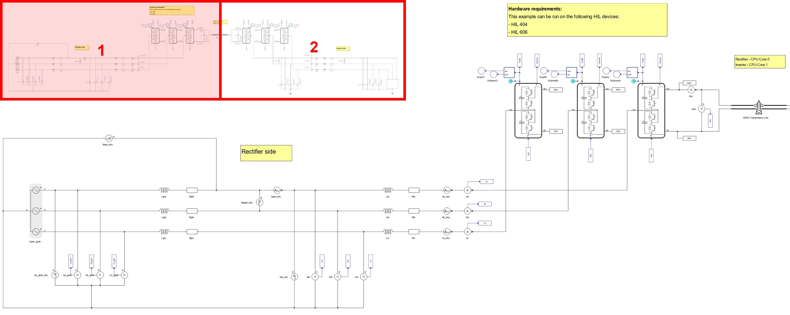
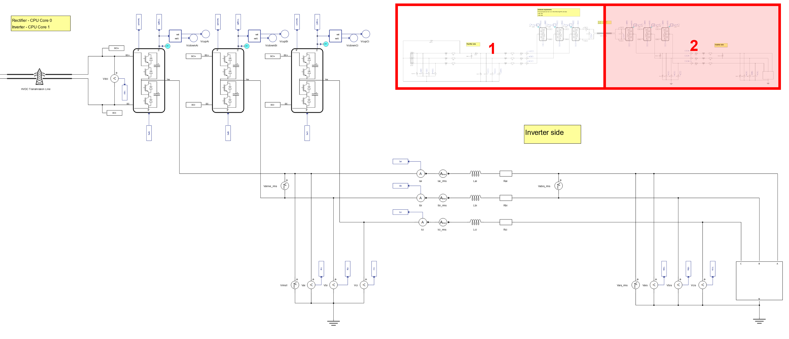
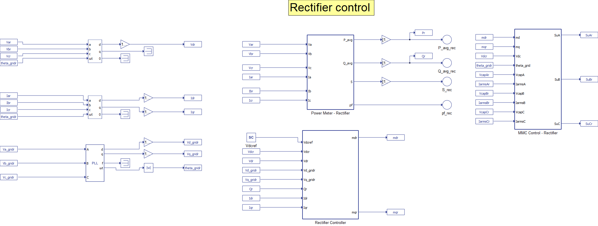
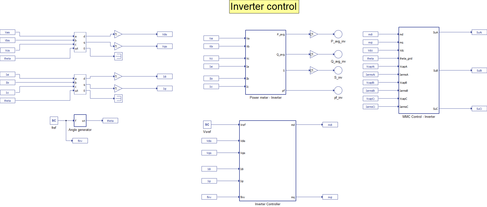
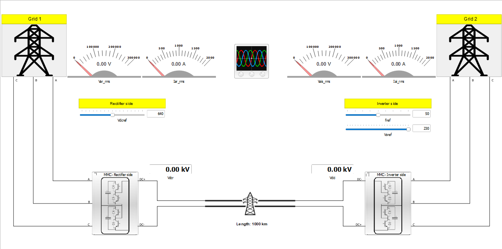
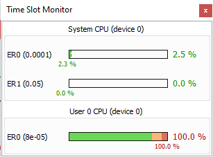
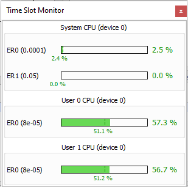
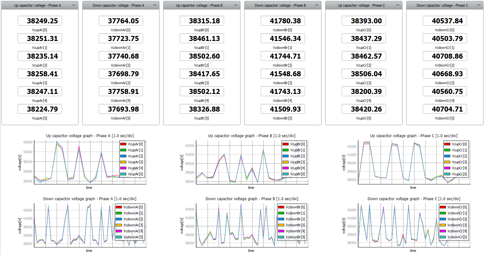
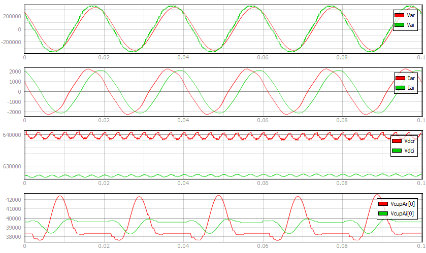
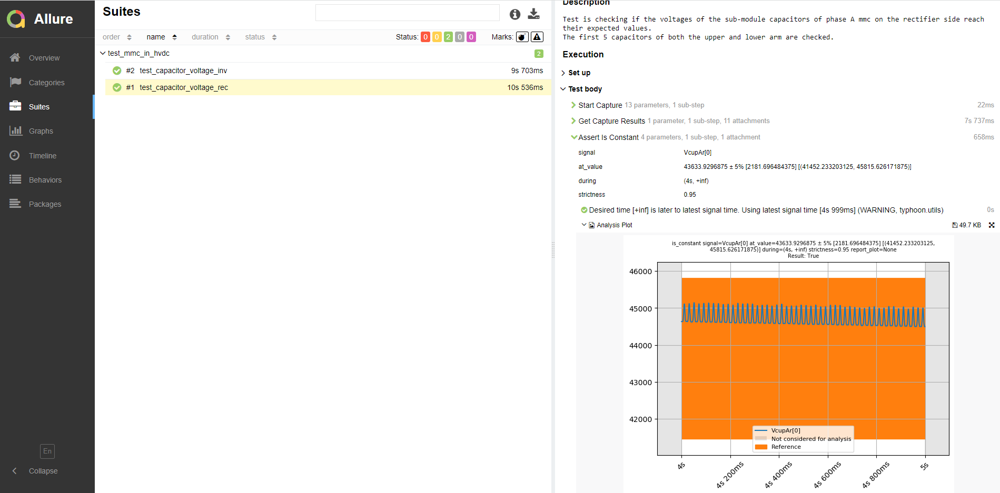

Modular Multi-level Converter (MMC) in High-voltage direct current (HVDC) transmission
Demonstration on the use of an MMC in one of its main applications: High-voltage DC electric power transmission.
Introduction
This application note presents a possible use of Modular Multilevel Converters (MMCs) in the Typhoon HIL environment. To demonstrate this, MMC model performance is shown in an HVDC (High-voltage direct current) transmission application, one of the main application areas for MMCs.
Model description
The model contains six Modular Multilevel Converter (MMC) legs. You can find more information about the MMC structure and topology in the Introduction section of the Modular Multi-level Converter (MMC) with Induction Machine application note. The three MMC legs on the left side of the model operate as rectifiers and are connected to each of the three phases of the Three Phase Voltage Source which emulates a grid. The rated voltage of the grid is 230 kV, and its frequency is 50 Hz. This side of the model is referred to as the Rectifier side. The three MMC legs on the right side of the model are operating as inverters and are connected to the three phases of the Constant Impedance Load. The rated voltage of the load is 230 kV, its frequency is 60 Hz, and its rated power is 1000 MVA. This side of the model is referred to as the Inverter side. The two sides are connected in a back-to-back configuration.
The DC outputs of the MMC on the Rectifier side are connected to the DC inputs of the MMC on the Inverter side via an HVDC Transmission Line. The length of the line is 1000 km, and the nominal DC voltage across the line is 640 kV. The rectifier side of the electrical model is shown in Figure 1. The inverter side of the electrical model is shown in Figure 2.


The phase-locked loop (Three phase PLL) and the control of the converters are implemented using Signal Processing Components. The control of the MMCs is managed using Nearest Level Control (NLC), which is implemented in the Control for MMC Leg - NLC component, which can be found in the MMC Control – Rectifier, and MMC Control – Inverter subsystems, respectively. The number of levels in this model is 17. By changing the appropriate parameter in the NLC block, the number of levels can be changed.
The Signal Processing part of the model consists of the Rectifier and Inverter control algorithms. The control algorithms for the Rectifier and Inverter sides are implemented as a closed-loop and located in the Rectifier Controller and Inverter Controller subsystems, respectively. A PLL component is used to provide reference values for the control. The two parts of the Signal Processing are shown in Figure 3 and Figure 4.


In order to save FPGA resources, the electrical model of the MMC is replaced with a switching function model. The switching function model is implemented using Signal Processing. That means that an increase in MMC levels results in higher CPU utilization, which in turn could lead to a Computing Interval Overrun. In order to effectively utilize the CPU of the HIL, CPU core partitioning is used in the model. CPU markers are used to map a portion of the signal processing model to a specified CPU core. Using CPU markers, the signal processing parts (such as control and the switching functions) of the rectifier and inverter sides were partitioned onto separate cores of the User CPU.
Simulation
This application comes with a pre-built SCADA panel, shown in Figure 5. The panel offers most essential user interface elements (widgets) to monitor and interact with the simulation in runtime. You can customize it freely to fit your needs.

After starting the simulation, we can check the CPU utilization using the Time Slot Monitor. In Figure 6, you can see the CPU utilization when the model is running on a single CPU core; the utilization here is over 100%, which will raise the CIO flag, indicating Computing Interval Overrun. The simulation results will be inaccurate.

In Figure 7, you can see the CPU utilization when the same model is running on two cores, where the utilization of both cores is at about 57%, and the CIO flag is not raised. This explains why the use of CPU Markers is necessary in this case. For more background on why this is needed, please refer to our Electric circuit partitioning documentation.

The SCADA panel allows you to have insight into the operation of these converters through various widgets and scopes. On the Rectifier side, you can observe and change the voltage on the DC link using the appropriate slider and observe RMS values of the phase voltage and current for phase A on the Rectifier side, here named Grid 1. By double clicking on the MMC – Rectifier sub-panel, you can observe voltages across the capacitors of the first five submodules, for both upper and lower arms, for all three phases. Their values are provided using the Digital Display widgets, while they are graphically represented using Trace Graphs. In Figure 8, the MMC – Rectifier sub – panel is shown.

On the Inverter side, you can observe the voltage on the DC link and observe RMS values of the phase voltage and current for phase A. Using the appropriate sliders, located on the left side of the SCADA panel, you can change the phase voltage and frequency on the Inverter side, here named Grid 2. The MMC – Inverter side sub-panel provides relevant information in the same way as the MMC – Rectifier side sub-panel.
The SCADA panel also includes a Capture/Scope widget. In Capture you can see the phase voltages and currents for both the Rectifier and Inverter sides. The third viewport shows the voltages on the DC link, measured from both the Rectifier and Inverter side. The fourth viewport shows the voltages across the first capacitor, as well as how the controller balances these voltages across the capacitors, for both sides. This is shown in Figure 9.

Test Automation
The provided test automation script validates if the voltage on each of the first 10 capacitors in the submodules are within an expected tolerance. Two tests are performed: one for the Rectifier and one for the Inverter side. The test captures the first five seconds of the simulation. When the voltages of the sub-module capacitors are in a steady state, the test measures and compares these values with the expected value . This value is approximately 44 kV. The tolerance is 5%, which is approximately 2200 V. In Figure 10, an example of a test result is shown.

Example requirements
Table 1 provides detailed information about the file locations and hardware requirements for running the model in real-time, followed by the HIL device resource utilization when running the model using this minimal hardware configuration. This information is provided to help you with running and customizing the model as you see fit.
| Files | |
|---|---|
| Typhoon HIL files | examples\models\grid-connected converters\mmc in hvdc\ mmc in hvdc.tse mmc in hvdc.cus examples\tests\111_mmc_in_hvdc\ test_mmc_in_hvdc.py |
| Minimum hardware requirements | |
| No. of HIL devices | 1 |
| HIL device model | HIL101 |
| Device configuration | 1 |
| HIL device resource utilization | |
| No. of processing cores | 1 |
| Max. matrix memory utilization | 2.86% (core0) |
| Max. time slot utilization | 63.64% (core0) |
| Simulation step, electrical | 1 µs |
| Execution rate, signal processing | 80 µs |
Authors
[1] Nikola Lucic
[2] Simisa Simic